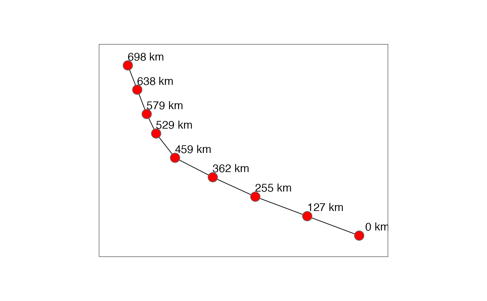

R/st_distance_along.R
st_distance_along.RdCompute Euclidian or great circle distance along a sequence of geometries
st_distance_along(
x,
...,
which = ifelse(isTRUE(sf::st_is_longlat(x)), "Great Circle", "Euclidean"),
par = 0,
tolerance = 0
)object of class sf, sfc or sfg
passed on to s2_distance or s2_distance_matrix
character; for Cartesian coordinates only: one of Euclidean, Hausdorff or Frechet; for geodetic coordinates, great circle distances are computed; see details
for which equal to Hausdorff or Frechet, optionally use a value between 0 and 1 to densify the geometry
ignored if sf::st_is_longlat(x) is FALSE; otherwise, if set to a positive value, the first distance smaller than tolerance will be returned, and true distance may be smaller; this may speed up computation. In meters, or a units object convertible to meters.
Returns a numeric vector of length x starting with 0 for the
first geometry, followed by the cumulative sums of distances between the
geometries along the sequence of x. If a geometry is empty the
corresponding value and any following value in vector are NA.
If the coordinate reference system of x was set, the
distances are returned with corresponding unit of measure; see
set_units.
For details see st_distance since
st_distance_along() is built-on that function.
library(sf)
library(tmap)
storms <- st_read(system.file("shape", package = "sf"), "storms_xyz", quiet = TRUE)
storms <- st_set_crs(storms, 4326)
st_storm_30 <- storms[30, ]
st_storm_30_pt <- st_cast(st_storm_30, "POINT", warn = FALSE)
dist_along <- st_distance_along(st_storm_30_pt)
#> st_as_s2(): dropping Z and/or M coordinate
#> st_as_s2(): dropping Z and/or M coordinate
st_storm_30_pt$dist_along_km <- units::set_units(dist_along, "km") %>% round() %>% paste("km")
tm_shape(st_storm_30) + tm_lines() +
tm_shape(st_storm_30_pt) + tm_bubbles(size = 0.5, col = "red") +
tm_text("dist_along_km", xmod = 2, ymod = 1) +
tm_layout(inner.margins = 0.1)
